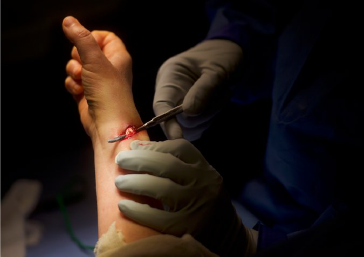
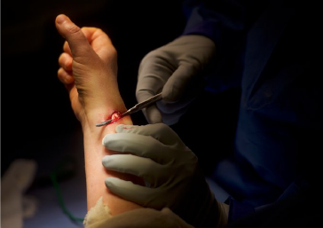

NEWS
- Local
- Sports
- Health
- Science
- Business
- National/World
- Politics
- Education
- Art
- Essays
- Blogs
LOCAL
- Calendar
- Classifieds
- Pasatimpo
- Real Estate
- Magazines
- National/World
- Obituaries
- Weather
GET CONNECTED
- Subscribe
- Contact
- About

close x
Health / Story
Going Under the Knife, With Eyes and Ears Wide Open
Posted: Saturday, March 25, 2017 10:00 pm | Updated: 12:54 am, Sun Mar 26, 2017.
By Jan Hoffman
The New York Times
BENSALEM, Pa. — “Do you want to see your tendons?”
Dr. Asif Ilyas, a hand and wrist surgeon, was about to close his patient’s wound. But first he offered her the opportunity to behold the source of her radiating pain: a band of tendons that looked like pale pink ribbon candy. With a slender surgical instrument, he pushed outward to demonstrate their newly liberated flexibility.
“That’s pretty neat,” the patient, Esther Voynow, managed to gasp.The operation Ilyas performed, called a De Quervain’s release, is usually done with the patient under anesthesia. But Voynow, her medical inquisitiveness piqued and her distaste for anesthesia pronounced, had chosen to remain awake, her forearm rendered numb with only an injection of a local anesthetic.
So she had been able to watch as Ilyas first sliced into her swollen right wrist, tugged gently at skin flaps and then opened a small bloody crater, exposing the inflamed sheath that had trapped her tendons. Now she could see why her thumb and wrist had been relentlessly throbbing.
More surgery is being performed with the patient awake and looking on, for both financial and medical reasons. But as surgical patients are electing to keep their eyes wide open, doctor-patient protocol has not kept pace with the new practice. Patients can become unnerved by a seemingly ominous silence, or put off by what passes for office humor. Doctors are only beginning to realize that when a patient is alert, it is just not OK to say, “Oops!” or “I wasn’t expecting that,” or even “Oh, my God, what are you doing?!”
In a continuing study of negative experiences during awake procedures, a patient informed University of Chicago researchers, “The surgeon told me he was going to get a sharper knife, and started laughing.” As a heads-up to staff members, some hospitals now post warning signs on the O.R. door: PATIENT AWAKE.
“For a thousand years, we talked about the operating theater,” said Dr. Mark Siegler, a medical ethicist at the University of Chicago and an author of a recent study on surgeon-patient communication during awake procedures, published in The American Journal of Surgery. “And for the first time, in recent years the patient has joined the cast.”
Choosing to watch your own surgery is one more manifestation of the patient autonomy movement, in which patients, pushing back against physician paternalism, are eager to involve themselves more deeply in their own medical treatment.
But Dr. Alexander Langerman, the senior author of the communication study and a head and neck surgeon on the faculty of Vanderbilt University Medical Center in Nashville, Tenn., said that a patient’s decision to remain awake during an operation also reflected a growing suspicion, generally, of authority figures. Noting how pedestrians pull out smartphones to capture police activity, he said: “There’s an element in that for patients, too. The occasional scandals that emerge while patients are sedated continue to erode their trust in
But patients are also intrigued by what is being done to them while they are asleep.For those who choose to stay awake, Langerman added, “there’s a curiosity and desire to have control over your experience.”
Indeed, a few studies suggest that some patients feel less anxious about staying awake
Other patients, studies show, are very anxious about general anesthesia, particularly right
Studies show that regional anesthesia has fewer complications than general anesthesia and is less expensive. Recovery time is swifter and side effects are fewer, which can reduce the need for postoperative opioids.
Proponents like Ilyas, who operates at the Rothman Orthopaedic Specialty Hospital in Bensalem, praise awake surgery as a step forward in transparency. “It’s all about communication, comfort and experience,” he said. “It is definitely catching on and creating a different kind of surgeon-patient relationship.”
But many doctors view awake surgery with apprehension. What happens if the patient becomes too anxious? Distracts the surgeon with too many questions? Or objects vigorously when a trainee scrubs in — a mainstay of surgical education?
Langerman said that many surgeons did not like being observed for other reasons, too.
Patient satisfaction, however, tends to be high. Voynow did not need a preoperative physical exam, blood work, an IV drip or even an attending anesthesiologist. As nurses wheeled her on a gurney out of the O.R., she looked pleasantly surprised. “I’ve had root canals that were worse,” she said.
Scarcely a half-hour after the surgery, she drove herself home, using her right hand, which had just been operated on. By contrast, if she had been given general anesthesia, she would have most likely needed several hours to recover, possibly had side effects like dizziness and nausea, and required someone to drive her. An anesthesiologist would have been necessary throughout the operation. And billed accordingly.
Esther Voynow undergoes wrist surgery last month while awake in Bensalem, Pa. More people are rejecting general anesthesia for procedures and opting to stay awake, prompting doctors to narrate their steps as they deal with alert patients asking questions. Mark Makela/The New York Times

 

Last month during surgery, Ms. Voynow was shown the tendons in her right wrist that had been causing her pain. Credit Mark Makela for The New York Times